땅 속을 상상해봤어? 아이들이 만든 개미 집 🐜🌱
안녕하세요, 생각공작소입니다. :)
4월 봄비가 내린 후, 촉촉한 땅 위를
바쁘게 줄지어 걷는 작은 친구들
"선생님, 개미예요!"
"어디 가는 거예요?"
아이들의 눈길을 끄는 봄의 단골 손님,
개미를 주인공으로
특별한 활동을 진행했습니다. 🐜✨
바로 개미 집 만들기!
땅 위에서만 보던 개미,
이번엔 땅 속까지 들어가 보기로 했습니다.
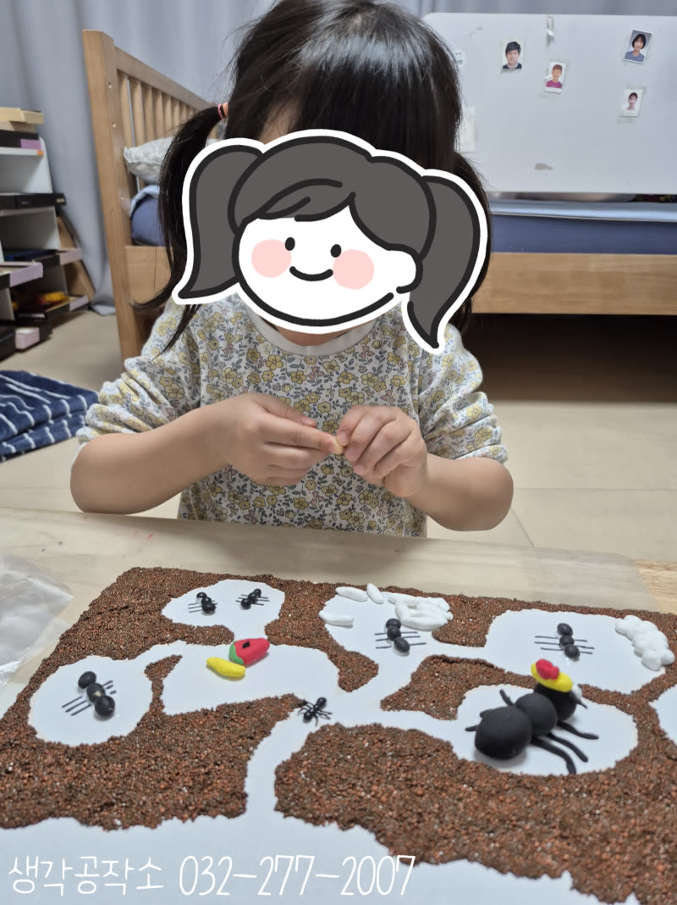
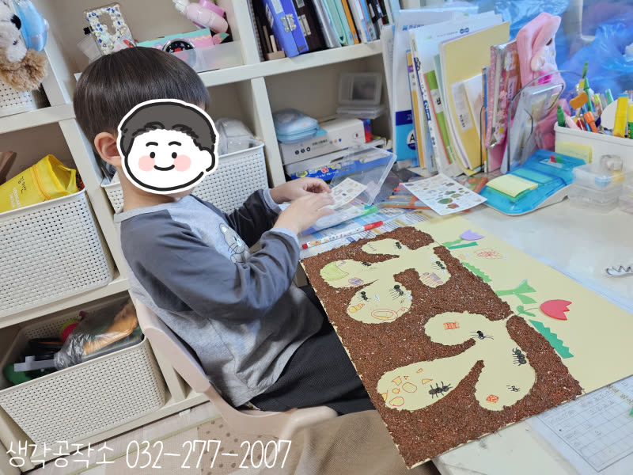
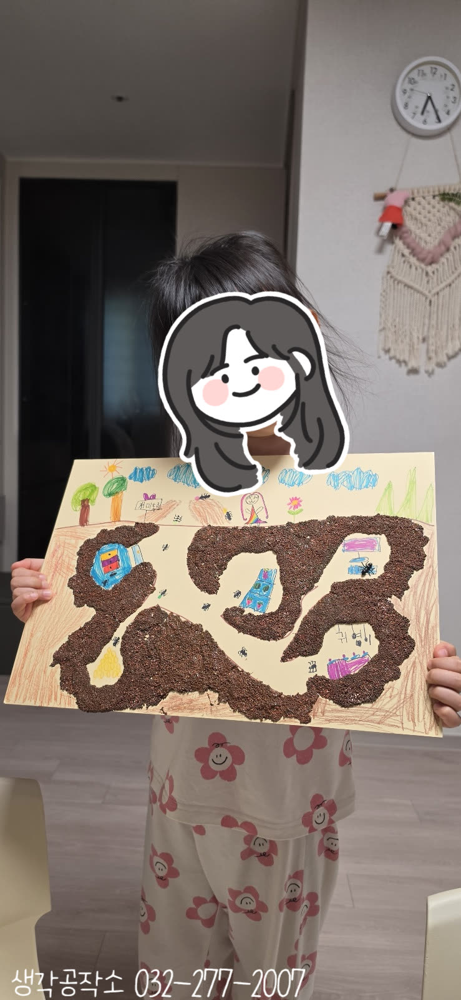
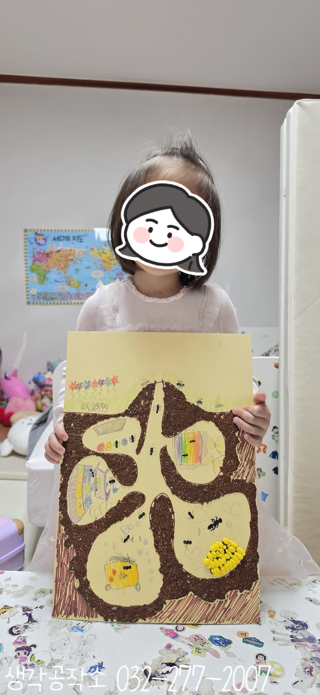
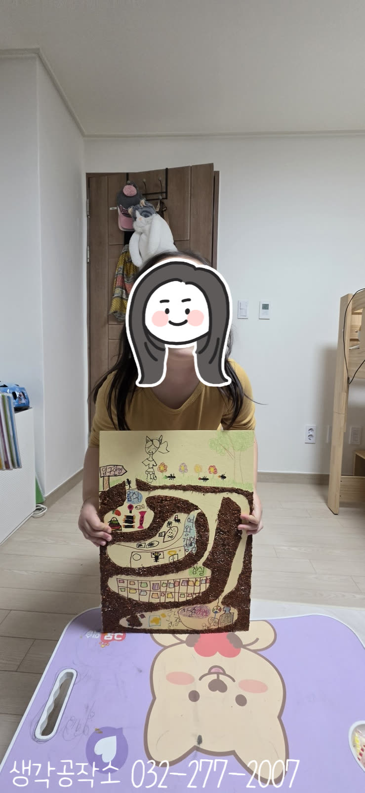
활동을 시작하기 전,
선생님과 함께 개미에 대한 이야기를 나눴어요.
개미책을 펼쳐
개미굴 단면 사진을 보여주자
아이들의 눈이 커졌습니다.
"개미가 땅 속에 이렇게 살아요?"
"방이 여러 개예요!"
"여왕개미 방도 따로 있어요?"
평소엔 그냥 지나쳤던 작은 개미 한 마리가
갑자기 다르게 보이기 시작했답니다. 🌍
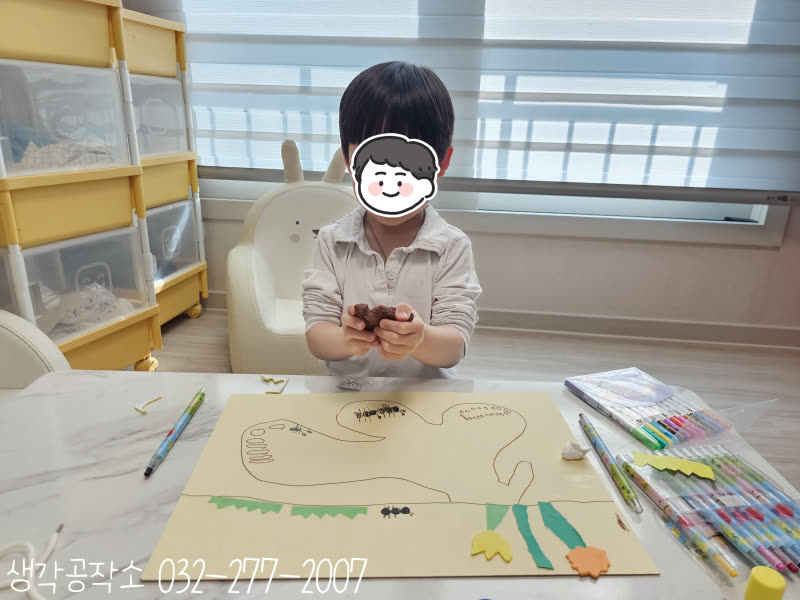
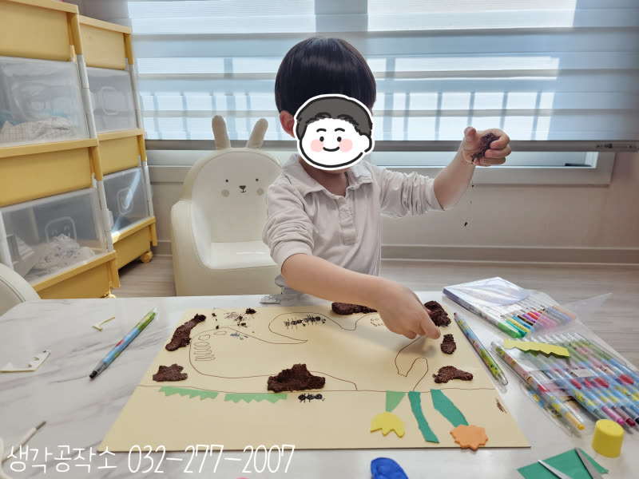
🗨️ 이제 직접 만들어볼 차례!
하드보드지를 앞에 두고
땅속과 땅 위의 경계선을 먼저 그렸어요.
"여기가 땅이고, 여기 아래가 굴이에요?"
"맞아! 이제 개미굴을 그려봐!"
아이들의 상상대로
구불구불 이어지는 통로가 그려지고,
크고 작은 방들이 하나씩 생겨났습니다.
"이 방은 여왕개미 방이에요!"
"여기는 개미 알 방이요!"
"이 방은 먹이 저장하는 방!"
방마다 이름을 붙이며 개미가 되어
집을 설계하는 아이들. 🏠✨
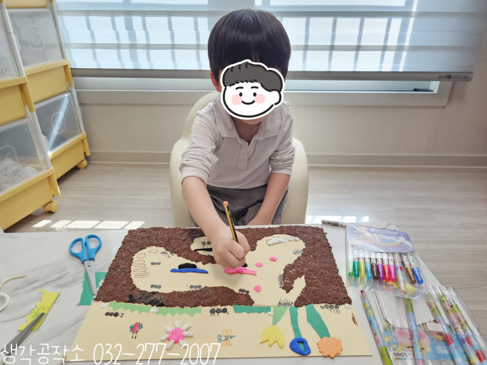
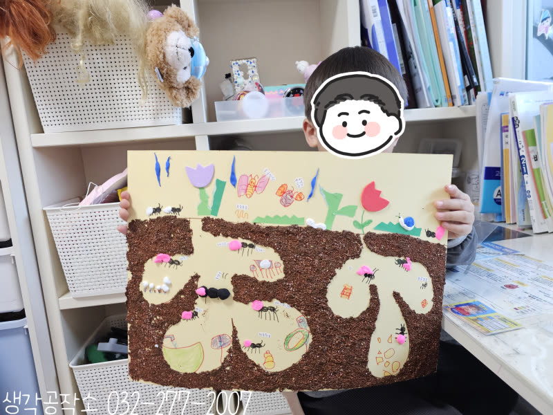
이제 폼클레이로 흙을 표현할 차례.
손가락으로 꾹꾹 눌러가며
갈색 폼클레이를 하드보드지에 붙여나가자
진짜 흙처럼
울퉁불퉁한 질감이 살아났어요. 🪨
"선생님, 흙 냄새 나는 것 같아요!"
"진짜 땅 같아요!"
개미굴 통로와 방이 선명하게 드러나며
작품이 점점 입체감을 갖춰갔습니다. 🌿
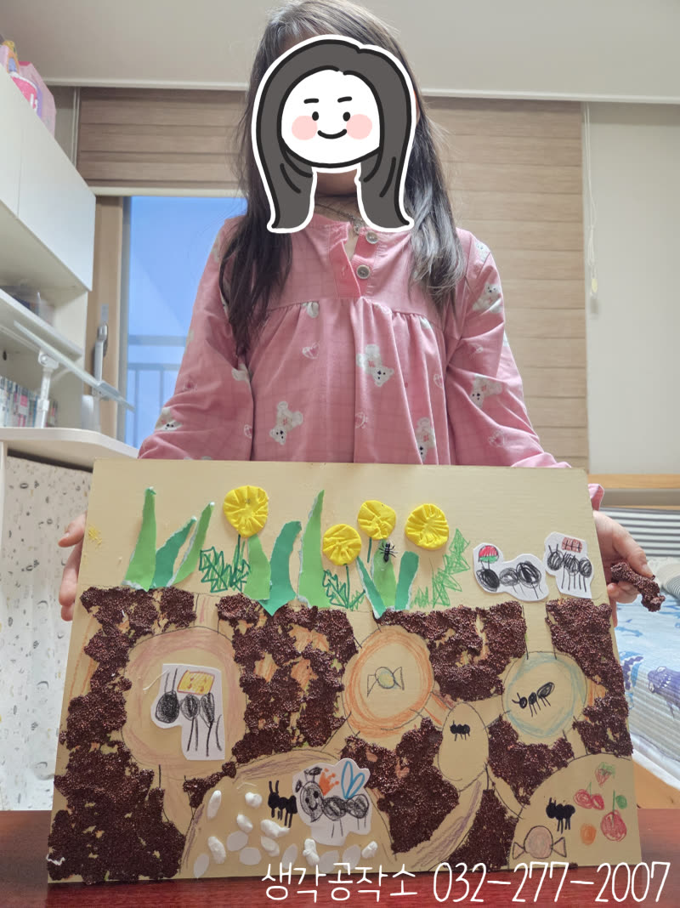
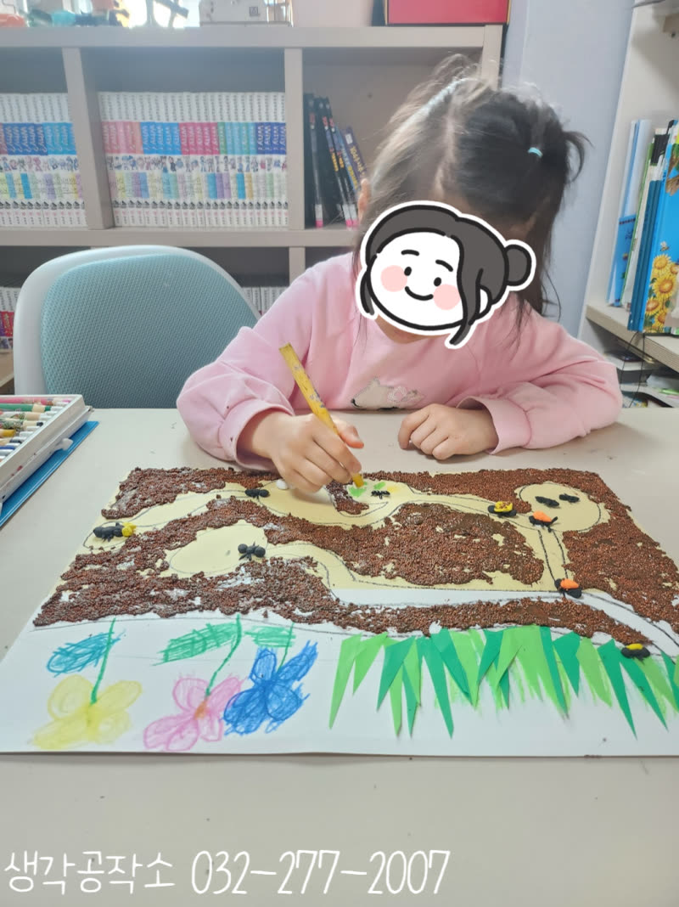
개미 모형을 하나씩 골라
방마다 배치하는 순간—
"이 개미는 먹이 나르는 중이에요!"
"얘는 자고 있어요!"
"이건 여왕개미, 제일 큰 방에 있어야 해요!"
개미들에게 이야기를 만들어주는 아이들
손 안에서 펼쳐지는 작은 세계가
생생하게 살아 움직였답니다. 🐜🐜
검은색 클레이로 개미를 직접 빚어
방 안에 붙이는 아이도 있었고,
흰 클레이로
개미 알까지 표현한 아이도 있었어요.
"알이 있어야 개미가 태어나잖아요!"
그 말에 선생님도 놀랐답니다. 😊
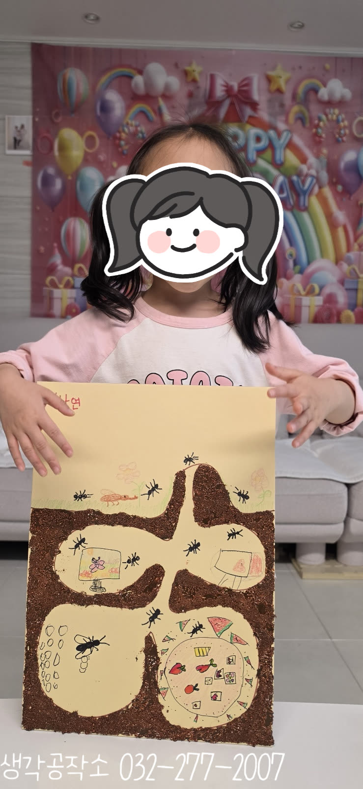
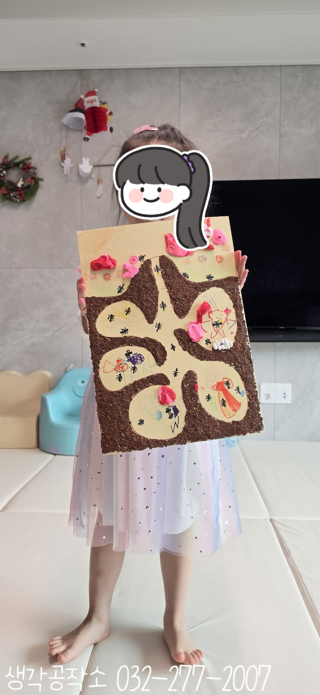
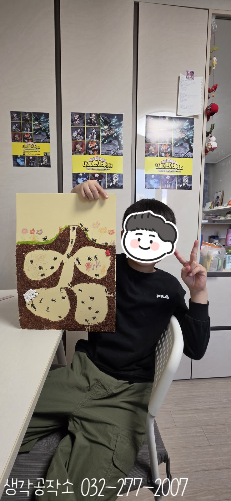
마지막으로 땅 위 세상을 꾸밀 차례!
초록 색종이로 잔디를 오리고,🌿
꽃과 나무를 그려 넣으며
땅 위의 풍경이 완성되어 갔어요.🌷
나비와 무당벌레까지—
"개미 친구들이 많아야 해요!"
"여기에도 꽃 더 그릴게요!"
저마다의 봄 풍경이
하드보드지 위에 피어났습니다. 🌸🦋
완성된 작품을 두 손으로 들어 보이며
뿌듯하게 웃는 아이들
땅 위와 땅 아래가 함께 담긴
세상에 하나뿐인 개미 마을이 탄생했습니다. 🌱
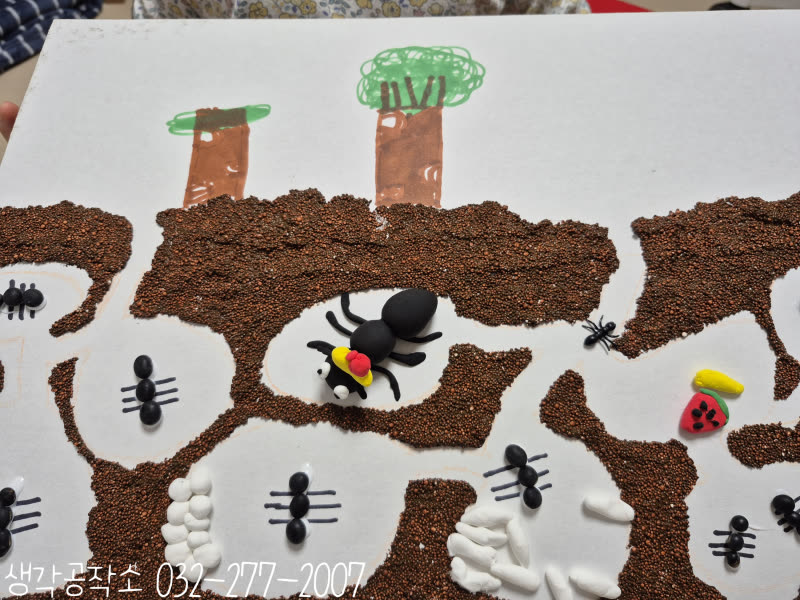
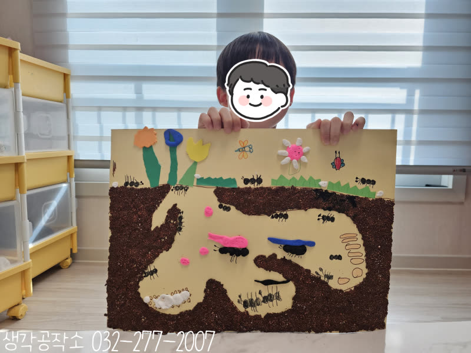
이번 개미 집 만들기는 단순한 만들기를 넘어,
자연 속 생명을 관찰하고 이해하고,
공간을 구성하며 입체적 사고를 기르고,
클레이를 누르고 붙이며 소근육을 발달시키고,
이야기를 만들며 상상력과 언어를 확장하는
모든 순간이 아이들의 성장이었답니다. 🐜
생각공작소는 아이들이
작은 자연 속에서 큰 세계를 발견하고
직접 만들고 표현하는 즐거움을 경험할 수 있도록
언제나 함께하겠습니다. 🙌
아이들의 가정에서
제공인력 선생님과 1:1로 진행하며,
아이들의 오감을 자극하고
창의력과 집중력을 자연스럽게 키우는
맞춤형 프로그램입니다.
단순히 만들기를 가르치는 것을 넘어,
아이들이 스스로 탐색하고 표현하며
성장할 수 있도록 세심하게 이끌어갑니다.
오감 쑥쑥! 생각 쑥쑥!
📞 생각공작소 032-277-2007